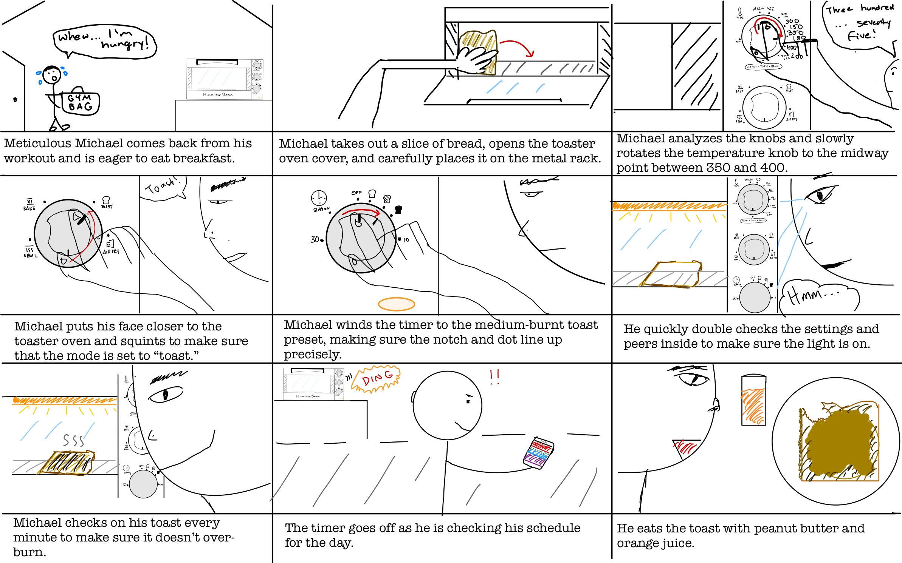

User Research + Personas + Storyboarding
I absolutely love eating warm bread and pastries. In this project, I explore a classic UX task with a toaster oven interface where I observe users interacting with a toaster oven, interview them about their experiences, form two personas, and sketch out a storyboard. I hope you enjoy!
This toaster oven interface strives to address difficulties a user may encounter when customizing settings for their specific food-heating objective. The interface features a large handle to open the front glass cover and three separate rotating knobs for temperature, mode (i.e. bake, toast, broil, or air fry), and time customization. It also includes visual indicators on the time knob so a user can set a specific burn level for their toast as well as a bright orange light indicator at the bottom to show when the oven is on.
Hurried Hannah is a full-time employee at a big firm who rushes to the office every morning but wants to fit in a quick breakfast before work. She despises having to figure out a bunch of complex buttons or knobs on a toaster oven. Hurried Hannah represents how two of the users I observed started to turn the knobs without ever pausing to examine them first and how one user did not even bother to adjust temperature. Additionally, all users occupied themselves with something on their phone almost immediately after the toaster oven timer started, indicating that they had other tasks to attend to.
Meticulous Michael is a full-time pre-med student who eats an identical breakfast every morning and is very particular about his food. He does not like how he has to eye the temperature and time using the knobs on the toaster oven and wishes he had access to more precise temperature and time increments. Meticulous Michael reflects how some users were more careful when preparing to toast. One user stared at the knobs for a couple seconds before adjusting the settings. Two of the users also squinted their eyes and furrowed their eyebrows as if focused on analyzing the knobs. One user also double checked the knobs and glanced inside the toaster oven before parting from the toaster.
A storyboard is often used to predict a user's experience with a certain product. The following (roughly sketched) storyboard demonstrates how a person like Meticulous Michael might use the toaster oven from beginning to end.
